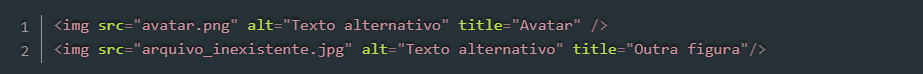
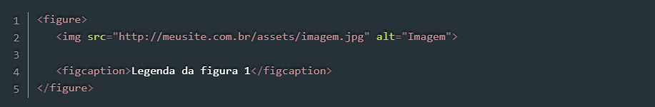

A inserção de imagens em uma página HTML pode ser feita por meio da tag img, que recebe no atributo src o endereço do arquivo a ser carregado. Além desse, outros dois atributos importantes são o alt, que indica um texto alternativo que será exibido caso o arquivo não possa ser carregado, e title, que indica o texto que aparecerá como tooltip ao passar o mouse sobre a figura.
O código da Listagem 4 insere uma imagem a partir do arquivo avatar.png, localizado na mesma pasta do arquivo HTML, e uma tag img apontando para um arquivo inexistente. Observe na Figura 3 que enquanto a primeira aparece corretamente, a segunda é exibida com um ícone de erro o texto alternativo que informamos. Note, ainda, que sobre a primeira figura está sendo exibido o tooltip definido no atributo title.
Listagem 1:

Resultado:
No caso da tag img, ainda temos as tags figure e figcaption que serão abordadas no tópico de HTML Semântico, porém, a sua estrutura é simples e é representada pelo código abaixo:
